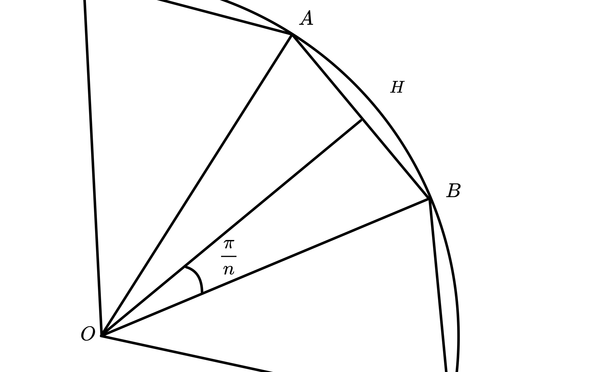

Introduction
작년에 배운 호도법과 관련하여 \(\pi\)에 관해 궁금증이 생김.그로 인해 \(\pi\)값을 실제로 구해보기로 함.
Way1
첫번째 방법 : 기하학적인 개념 및 무한의 개념을 이용한 계산

다음과 같이 반지름이 1인 원에 내접하는 n각형이 있다고 가정하겠습니다.
$$
\begin{align*}
& \sin{\frac {\pi} {n}} = \overline{AH} \\
& \overline{AB} = 2 \sin{\frac {\pi} {n}} \\
\end{align*}
$$
따라서 \(n\) 각형의 둘레의 길이를 \(f(n)\) 이라고 할때
$$ f(n) = 2n\sin{\frac{\pi} {n}}$$ 이고
$$ \begin{align*} &\lim_{n \to \infty} f(n) \\ & = \lim_{n \to \infty} 2n\sin{\frac{\pi} {n}} \\ & = 2 \pi \end{align*} $$
입니다.
$$ \begin{align*} &\lim_{n \to \infty} f(n) \\ & = \lim_{n \to \infty} 2n\sin{\frac{\pi} {n}} \\ & = 2 \pi \end{align*} $$
입니다.
진행하면서 생긴 문제점
\(\pi\)값을 구하는데 \(\pi\)값이 사용된다는 것
\(\pi\)의 값을 알아내고 그 값을 통해 호도법과 라디안, 삼각 함수등을 정의할 수 있게됨.그러나 위 방식으로는 \(\pi\)값을 알아내기 위해 삼각함수를 사용하므로,
\(\pi\)값을 미리 알고 있어야한다는 전제 조건이 생기게 됨.
따라서 이 방법은 잘못된 것이라고 판단하였다.
Way2
두번째 방법 : 미분과 적분 및 무한대의 개념을 이용한 계산
$$
\begin{align*}
& f(x)= \sin(x){(0 \leq x \leq \frac {\pi} {2})} \ ,
\quad g(x) = f^{-1}(x) \\
& f(0) = 0 \, , \quad f(\frac {\pi} {2}) = 1 \\
& g(0) = 0 \, , \quad g(1) = \frac {\pi} {2} \\ \\
& f(g(x)) = x \\
& f^{\prime}(g(x))g^{\prime}(x) = 1 \\
\end{align*}
$$
$$
\begin{align*}
& y = f(x) = \sin{x} \\ & x = \sin{y}
\end{align*}
$$
$$
\begin{align*}
\\ g^{\prime}(x) & = \frac {1} {f^{\prime}(g(x))} \\
& = \frac {1} {\cos{y}} \\
& = \frac {1}
{\sqrt{1-\sin^{2}y}} \\
& = \frac {1} {\sqrt {1-x^2}} \\
& \int_{0}^{1} g^{\prime}(x) dx = \frac {\pi} {2} \\
& \pi = 2\int_{0}^{1}
g^{\prime}(x) dx \\
\end{align*}
$$
따라서 급수를 이용하여 정적분을 정의하고, 값을 구하는 방법을 사용함.
2. n개의 직사각형의 넓이를 모두 합한다.
3. n을 무한대로 보낸다.
(n이 무한대로 발산할 때, n개의 직사각형의 가로 길이는 매우 작아지게 된다.
결국 n개의 직사각형의 넓이와, 실제 넓이의 오차값이 0으로 수렴하게 된다.)
따라서 정적분을 급수의 합으로 나타낼 수 있다.
$$
\begin{align*}
& \int_{a}^{b} f(x) dx =
\lim_{n \to \infty} \sum_{k =1}^{n}
{f(a + k \cdot \frac {b-a} {n}) \cdot \frac {b-a} {n}} \\ \\
& \pi = \int_{0}^{1} f(x) dx =
\lim_{n \to \infty} \sum_{k =1}^{n}
{f(0 + k \cdot \frac {1} {n}) \cdot \frac {1} {n}}
\end{align*}
$$
Way3
3번째 방법 : 삼각함수와 테일러 급수를 활용하여 계산
$$
\begin{align*}
&\tan{\frac{\pi}{4}} = 1 \\
&{\tan^{-1}}{(1)} = \frac {\pi} {4} \\
&\pi = 4\tan^{-1}(1)\\
\end{align*}
$$
따라서 매클로린 급수 [2] 를 사용하여 계산을 해야함.(실제로 컴퓨터나 계산기도 이러한 방식을 통해 값을 계산함.)